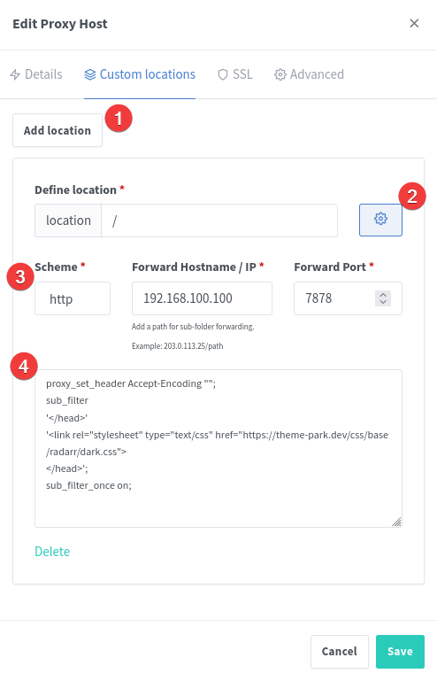
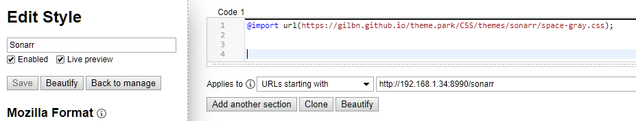

Setup¶
Methods¶
- Docker Mods for linuxserver.io images Adds the theme locally
- Selfhost Method Selfhost the files
- 🐋 Docker image Selfhost the the files using our docker image
- Rootless option An optional rootless docker image
- SWAG Docker Mod Selfhost the files using our lsio docker mod for SWAG
- Subfilter Method Injects the theme through a proxy
- Nginx
- Nginx Variable For easy switching in nginx
- Nginx Proxy Manager
- Apache
- Caddy
- Caddy V2
- Traefik
- Stylus Method Injects the theme through a browser extension
- Blackberry Theme Installer Injects the theme using Javascript (Made for Organizr)
- Develop
- Community Themes
- Custom Github Setup
All apps have 11 official themes and 21 community-themes to choose from.
https://theme-park.dev/css/base/<APP_NAME>/<THEME_NAME>.css
aquamarine.css
hotline.css
hotpink.css
dracula.css
dark.css
organizr.css
space-gray.css
overseerr.css
plex.css
nord.css
maroon.css
Example: https://theme-park.dev/css/base/sonarr/dark.css
Ibracorp video overview¶
Docker mods¶
For linuxserver.io containers to inject theme.park stylesheets.
Warning
Not all apps support this installation method. See the list to the left on the themes overview. Look for the 🐳 icon.
https://github.com/themepark-dev/theme.park/tree/master/docker-mods
This will inject the stylesheet directly into the app. This means that you don't need to use NGINX or stylus. Since it's injected into the HTML in the app, it will work locally too.
Add the variable DOCKER_MODS=ghcr.io/themepark-dev/theme.park:<app> e.g. ghcr.io/themepark-dev/theme.park:sonarr
These are the default values for all envs. So if you want to use the organizr theme, you only need to add the DOCKER_MODS variable.
Enviroment variables¶
| Environment Variable | Example Value | Description |
|---|---|---|
DOCKER_MODS |
ghcr.io/themepark-dev/theme.park:<app> |
Replace <app> |
TP_DOMAIN |
theme-park.dev |
Optional Defaults to the example. If you selfhost and use subfolder, you must escape the forward slash. domain.com\/themepark |
TP_THEME |
organizr |
Optional The theme-option you want to use. Defaults to the example. |
TP_COMMUNITY_THEME |
true |
Optional Set to true if you are using a community theme option |
TP_ADDON |
radarr-4k-logo |
Optional Multiple addons can be added using the pipe | symbol as a separator. Ex: radarr-4k-logo|radarr-darker See addon wiki for all addons |
TP_SCHEME |
https |
Optional Defaults to example. |
TP_HOTIO |
true |
Optional See Hotio Containers |
TP_DISABLE_THEME |
true |
Optional Only used on some mods (Qbt) |
LSIO Example¶
version: "2.1"
services:
sonarr:
image: ghcr.io/linuxserver/sonarr
container_name: sonarr
environment:
- PUID=1000
- PGID=1000
- TZ=Europe/London
- DOCKER_MODS=ghcr.io/themepark-dev/theme.park:sonarr
volumes:
- /path/to/data:/config
- /path/to/media:/media
ports:
- 8989:8989
restart: unless-stopped
docker run -d \
--name=sonarr \
-e PUID=1000 \
-e PGID=1000 \
-e TZ=Europe/London \
-e DOCKER_MODS=ghcr.io/themepark-dev/theme.park:sonarr \
-p 8989:8989 \
-v /path/to/data:/config \
-v /path/to/media:/media \
--restart unless-stopped \
ghcr.io/linuxserver/sonarr
Hotio containers / S6-Overlay (V3) images¶
Warning
The DOCKER_MODS variable does not work on Hotio images / S6-Overlay(V3) images (Except LSIO images)!
The script must be mounted using a volume mount. See https://hotio.dev/faq/#guides.
Note
The scripts does not support S6-Overlay V2. You will need to update the shebang.
Replace the shebang with #!/usr/bin/with-contenv bash
Info
The scripts are located in the docker-mods folder. https://github.com/themepark-dev/theme.park/tree/master/docker-mods You can download all the scripts using the download script below
Go to <app>/root/etc/cont-init.d/ to find the different scripts. e.g. /sonarr/root/etc/cont-init.d/98-themepark
Note
Make sure the script is executable! The download script will chmod +x all files, but if you download manually, you need to run the chmod command on the file.
Download and mount your script with the volume /your/docker/host/98-themepark:/etc/cont-init.d/98-themepark to execute your script on container start
Download script¶
This script will download all mods/scripts into the path you choose.
Defaults to /tmp/theme-park-mods if no path argument is passed.
See script contents here: https://github.com/themepark-dev/theme.park/blob/master/fetch.sh
sudo apt-get install jq curl
sudo bash -c "$(curl -fsSL https://theme-park.dev/fetch.sh)" /your/save/path
The script will rename all files to 98-themepark-<app> ex: 98-themepark-sonarr
Hotio Example¶
Add the variable TP_HOTIO and set it to true.
The script will then use the correct file path inside the Hotio container.
Use the different Environment variables above.
version: "3.7"
services:
sonarr:
container_name: sonarr
image: hotio/sonarr
ports:
- "8989:8989"
environment:
- PUID=1000
- PGID=1000
- UMASK=002
- TZ=Etc/UTC
- TP_HOTIO=true
- TP_THEME=plex
volumes:
- /<host_folder_config>:/config
- /your/save/path/98-themepark-sonarr:/etc/cont-init.d/98-themepark
docker run --rm \
--name sonarr \
-p 8989:8989 \
-e PUID=1000 \
-e PGID=1000 \
-e UMASK=002 \
-e TZ="Etc/UTC" \
-e TP_HOTIO="true" \
-e TP_THEME=plex \
-v /<host_folder_config>:/config \
-v /your/save/path/98-themepark-sonarr:/etc/cont-init.d/98-themepark \
hotio/sonarr
Hotio FAQ¶
The script exits with [cont-init.d] 98-themepark: exited 127.
A typical error can look like:
[cont-init.d] 98-themepark: executing...
exec: fatal: unable to exec bash
: No such file or directory
[cont-init.d] 98-themepark: exited 127.
Or
[cont-init.d] 98-themepark: executing...
foreground: warning: unable to spawn /var/run/s6/etc/cont-init.d/98-themepark: Permission denied
[cont-init.d] 98-themepark: exited 127.
No such file or directory bash
If the line before the exit says: : No such file or directory
The file you have created, most likely have CRLF line endings. This typically happens when you create the file using Windows.
If you created the file using Notepad++, you can convert the file to LF. (Edit -> EOL Conversion -> Unix (LF))
foreground: warning: unable to spawn /var/run/s6/etc/cont-init.d/98-themepark: Permission denied
This means what the error says, permission denied.
Make sure that the file can be executed.
chmod +x yourfile
Selfhosting¶
Docker¶
There is a docker image available if you want to selfhost the css files instead of of using https://theme-park.dev.
Version Tags¶
| Tag | Description |
|---|---|
latest |
Based on latest release on the master branch |
develop |
Based on latest commit on the develop branch |
testing |
Based on latest commit on the testing branch |
x.x.x |
Based on latest version tag released on the master branch |
<tag>-<hash> |
Based on the latest commit hash on the branch |
The architectures supported by this image are:
| Architecture |
|---|
| linux/amd64 |
| linux/arm64 |
| linux/arm/v7 |
Application Setup¶
CSS files can be accessed on <your-ip>:<port>/css/base/<app>/<app>-base.css or <your-ip>:<port>/css/base/<app>/<theme>.css
All the CSS files can be located in /config/www/css
Add custom theme-options¶
If you want to add a custom theme option, you can add in /config/www/css/theme-options and restart the container. The container will run themes.py and auto generate all the theme option files in the different base folders.
Then you can load the css by going to <your-ip>:<port>/css/base/<app>/your-custom-theme.css
Subfolder¶
You can also use /themepark to access the files. The subfolder path can be overridden with the TP_URLBASE env.
Note
If you want to use DOCKER_MODS and this container locally without a domain, you can add the TP_SCHEME=http env to the container (e.g sonarr) you have added the DOCKER_MODS env to. See example here: Docker mods local example:
version: "2.1"
services:
theme-park:
image: ghcr.io/themepark-dev/theme.park
container_name: theme-park
environment:
- PUID=1000
- PGID=1000
- TZ=Europe/London
- TP_URLBASE=themepark #optional
volumes:
- /path/to/data:/config #optional
ports:
- 8080:80
- 4443:443
restart: unless-stopped
docker run -d \
--name=theme-park \
-e PUID=1000 \
-e PGID=1000 \
-e TZ=Europe/London \
-e TP_URLBASE=themepark `#optional` \
-p 8080:80 \
-p 4443:443 \
-v /path/to/data:/config `#optional` \
--restart unless-stopped \
ghcr.io/themepark-dev/theme.park
Parameters¶
| Parameter | Function |
|---|---|
-p 8080 |
HTTP web gui |
-p 4443 |
HTTPS web gui |
-e PUID=1000 |
for UserID |
-e PGID=1000 |
for GroupID |
-e TZ=Europe/London |
Specify a timezone to use EG Europe/London |
-e TP_URLBASE=subfolder |
Optional - This will make the CSS files accessible on a custom subfolder instead of the default /themepark endpoint. ex domain.com/<something>/css/base/plex/overseerr.css |
-v /config |
Contains all relevant configuration files. |
Reverse proxy example¶
server {
listen 80;
server_name themes.yourdomain.com;
return 301 https://$server_name;
}
server {
listen 443 ssl;
listen [::]:443 ssl;
server_name themes.yourdomain.com;
location / {
proxy_set_header Host $host;
proxy_pass https://192.168.1.34:4443;
}
}
Reverse proxy example subfolder¶
location /themepark {
return 301 $scheme://$host/themepark/;
}
location ^~ /themepark/ {
set $upstream_app theme-park;
set $upstream_port 443;
set $upstream_proto https;
proxy_set_header Host $host;
proxy_pass $upstream_proto://$upstream_app:$upstream_port;
}
Docker mods local example¶
version: "2.1"
services:
sonarr:
image: ghcr.io/linuxserver/sonarr
container_name: sonarr
environment:
- PUID=1000
- PGID=1000
- TZ=Europe/London
- DOCKER_MODS=ghcr.io/themepark-dev/theme.park:sonarr
- TP_SCHEME=http
- TP_DOMAIN=192.168.1.99:8080\/themepark # forward slash needs to be escaped with a \
volumes:
- /path/to/data:/config
- /path/to/media:/media
ports:
- 8989:8989
restart: unless-stopped
theme-park:
image: ghcr.io/themepark-dev/theme.park
container_name: theme-park
environment:
- PUID=1000
- PGID=1000
- TZ=Europe/London
- TP_URLBASE=themepark
volumes:
- /path/to/data:/config
ports:
- 8080:80
restart: unless-stopped
Rootless docker image¶
The people in the k8s@home community have made a rootless docker image alternative.
https://github.com/k8s-at-home/container-images/tree/main/apps/theme-park
See their docs for more information. https://docs.k8s-at-home.com/
SWAG Docker Mod¶
This will download the CSS files into your SWAG appdata folder. (/config/www/themepark)
Files are downloaded using svn, so the svn package will be installed on the container.
Add the variable DOCKER_MODS=ghcr.io/themepark-dev/theme.park:swag to your SWAG container.
SWAG Mod Setup¶
The mod copies two nginx conf files into /config/proxy-confs that you can enable.
themepark.subdomain.conf.sample
themepark.subfolder.conf.sample
The CSS files will then be available at either themepark.domain.com or domain.com/themepark
SWAG Enviroment variables¶
| Environment Variable | Example Value | Description |
|---|---|---|
TP_BRANCH |
live_develop |
Select the branch you want to download from. Default is live |
Available branches are live(master), live_develop and live_testing
Subfilter method¶
As most of these apps doesn't have support for custom CSS. You can get around that by using the subfilter module in NGINX or similar modules for other webservers.
Info
If you don't know how to reverse proxy an application, please read this first. It's a really great article and will help you understand all the pieces!
https://blog.linuxserver.io/2019/04/25 letsencrypt-nginx-starter-guide/ and https://docs.linuxserver.io/general/swag/
Nginx¶
Add this to your reverse proxy:
Warning
Make sure to add the config before any rewrites and not inside any /api location blocks!
proxy_set_header Accept-Encoding "";
sub_filter
'</head>'
'<link rel="stylesheet" type="text/css" href="https://theme-park.dev/css/base/<APP_NAME>/<THEME>.css">
</head>';
sub_filter_once on;
Where APP_NAME is the app you want to theme and THEME is the name of the theme. e.g. aquamarine
Nginx Example¶
location /sonarr {
proxy_pass http://localhost:8989/sonarr;
include /config/nginx/proxy.conf;
proxy_set_header Accept-Encoding "";
sub_filter
'</head>'
'<link rel="stylesheet" type="text/css" href="https://theme-park.dev/css/base/sonarr/plex.css">
</head>';
sub_filter_once on;
}
Nginx Variable¶
You can also setup NGINX to use variables to change the themes. This will update the theme on all your location blocks by just changing 1 variable. This is nice if you quickly want to change colors on all of your apps.
http block¶
In your http block add the following:
# THEME.PARK
map $host $theme {
default <theme>; # e.g. default organizr
}
Change <theme> to the theme you want on all your apps. e.g. default nord;
theme-park.conf¶
Next create a new file called theme-park.conf and add the following code: (Note: It's not really necessary to create the conf file but I think it looks cleaner in the location blocks)
Warning
Make sure to add the config before any rewrites and not inside any /api location blocks!
proxy_set_header Accept-Encoding "";
sub_filter
'</head>'
'<link rel="stylesheet" type="text/css" href="https://theme-park.dev/css/base/$app/$theme.css">
</head>';
sub_filter_once on;
As you can see the URL has variables in it $app.css and $theme.css
The $theme variable is set in the http block and will affect all server blocks. And the $app variable is set in the location block.
Location blocks¶
Now in the location block use the include syntax and include the theme-park.conf file and set the $app variable, like so:
set $app <app>;
include /config/nginx/theme-park.conf;
Sonarr Example¶
location /sonarr {
proxy_pass http://192.168.1.34:8990/sonarr;
proxy_set_header X-Real-IP $remote_addr;
proxy_set_header X-Forwarded-For $proxy_add_x_forwarded_for;
proxy_set_header X-Forwarded-Proto $scheme;
proxy_redirect off;
proxy_buffering off;
proxy_http_version 1.1;
proxy_no_cache $cookie_session;
set $app sonarr;
include /config/nginx/theme-park.conf;
}
Now when you change the variable in the http block and restart NGINX, it will update the theme for all your apps!
Nginx Proxy Manager¶
If you're using Nginx Proxy Manager you can follow these steps:
- Go the Proxy Hosts list in NPM, and click the three dots on the rightmost side of the host you want to add a theme to. Select 'Edit' from the menu that appears (first item). Within the edit menu go to 'Custom locations' (second tab). In that tab click 'Add location', which will show the 'Define location' options.
- Enter '/' in the location bar, and then click the gear to the right of it. That will open the box at the bottom where Nginx config code can be added.
- Fill in the details of the host you're forwarding to. These should be the same as the ones you filled in when you created the host (i.e. the same as in the 'Details' tab (first tab) in the edit menu).
- Add the code below to the box at the bottom of the edit menu window. Don't forget to update the
<APP_NAME>and<THEME>with the correct app and theme.
proxy_set_header Accept-Encoding "";
sub_filter
'</head>'
'<link rel="stylesheet" type="text/css" href="https://theme-park.dev/css/base/<APP_NAME>/<THEME>.css">
</head>';
sub_filter_once on;

Apache¶
RequestHeader unset Accept-Encoding
AddOutputFilterByType SUBSTITUTE text/html
Substitute 's|</head>|<link rel="stylesheet" type="text/css" href="https://theme-park.dev/css/base/<APP_NAME>/<THEME>.css"></head>|ni'
Apache Example¶
<Location /sonarr>
ProxyPass http://localhost:8989/sonarr
ProxyPassReverse http://localhost:8989/sonarr
RequestHeader unset Accept-Encoding
AddOutputFilterByType SUBSTITUTE text/html
Substitute 's|</head>|<link rel="stylesheet" type="text/css" href="https://theme-park.dev/css/base/sonarr/nord.css"></head>|ni'
</Location>
Caddy¶
filter rule {
content_type text/html.*
search_pattern </head>
replacement "<link rel='stylesheet' type='text/css' href='https://theme-park.dev/css/base/<APP_NAME>/<THEME>.css'></head>"
}
Caddy Example¶
proxy /tautulli 127.0.0.1:8181 {
header_upstream Host {host}
header_upstream X-Real-IP {remote}
header_upstream X-Forwarded-For {remote}
header_upstream X-Forwarded-Proto {scheme}
header_upstream X-Forwarded-Host {host}
header_upstream X-Forwarded-Ssl {on}
filter rule {
content_type text/html.*
search_pattern </head>
replacement "<link rel='stylesheet' type='text/css' href='https://theme-park.dev/css/base/tautulli/nord.css'></head>"
}
}
Caddy Docker labels¶
"caddy.filter": "rule"
"caddy.filter.content_type": "text/html.*"
"caddy.filter.search_pattern": "</head>"
"caddy.filter.replacement": "\"<link rel='stylesheet' type='text/css' href='https://theme-park.dev/css/base/tautulli/nord.css'></head>\""
Caddy v2¶
Info
Thank you jef for the write up!
We rely on sjtug's caddy2-filter as Caddy v2 does not have filtering as of now.
There are two ways to extend Caddy:
Caddy Docker Image¶
You will have to create your own Caddy image that includes the caddy2-filter.
Dockerfile:
FROM caddy:2.0.0-builder AS builder
RUN caddy-builder \
github.com/sjtug/caddy2-filter
FROM caddy:2.0.0
COPY --from=builder /usr/bin/caddy /usr/bin/caddy
Then run docker build -t caddy:latest . to build the image. After we update the Caddyfile below, we can (re)start the container by running docker run -d -p 80:80 -p 443:443 caddy:latest as an example.
Bare metal¶
Info
Make sure you install xcaddy to add modules to Caddy.
Then install the caddy2-filter module by using:
xcaddy build \
--with github.com/sjtug/caddy2-filter
You can confirm the module is available by using xcaddy list-modules.
Updating the Caddyfile¶
Almost like Caddy v1, here is an example filter we need to include in the all the services we want themed:
filter {
content_type text/html.*
search_pattern </head>
replacement "<link rel='stylesheet' type='text/css' href='https://theme-park.dev/css/base/<APP_NAME>/<THEME>.css'></head>"
}
With caddy2-filter, we need to also add this option in the global option block:
{
order filter after encode
}
And if you're using a reverse proxy, you also need to include header_up -Accept-Encoding in the reverse_proxy directive body.
Full example of a Caddyfile
nginx
{
order filter after encode
}
radarr.example.com {
encode zstd gzip
reverse_proxy 127.0.0.1:7878 {
header_up -Accept-Encoding
}
filter {
content_type text/html.*
search_pattern </head>
replacement "<link rel='stylesheet' type='text/css' href='https://theme-park.dev/css/base/radarr/nord.css'></head>"
}
}
Note
 If your service requires you to ignore a header, use the
If your service requires you to ignore a header, use the header_down subdirective in the reverse_proxy directive. For example, qBittorrent usage would look like this:
reverse_proxy 127.0.0.1:8080 {
header_up -Accept-Encoding
header_down -x-webkit-csp
header_down -content-security-policy
}
Subfolder/directory example¶
route /sonarr/* {
filter {
content_type text/html.*
search_pattern </head>
replacement "<link rel='stylesheet' type='text/css' href='https://theme-park.dev/css/base/sonarr/nord.css'></head>"
}
reverse_proxy /sonarr/* http://sonarr:8989 {
header_up -Accept-Encoding
header_down -x-webkit-csp
header_down -content-security-policy
}
}
Feel free to make any adjustments! Thanks everyone for the help!
Also for reference: Caddy v2 structure
Traefik¶
Info
Thank you packruler for the write up!
We rely on packruler's traefik-themepark plugin to support rewriting page content for theming.
Below are a few examples of file content that add support for adding themes via Traefik.
traefik.yml¶
Add the following to your static traefik config.
experimental:
plugins:
theme-park:
modulename: "github.com/packruler/traefik-themepark"
version: "v1.2.0"
(dynamic)/middleware.yml¶
Basic dynamic template
http:
middlewares:
sonarr-dark:
plugin:
themepark:
# The name of the supported application listed on https://docs.theme-park.dev/themes.
app: sonarr
# The name of the supported theme listed on https://docs.theme-park.dev/theme-options/ or https://docs.theme-park.dev/community-themes/
theme: dark
# baseUrl is optional if you want to use a self-hosted version of theme.park
baseUrl: https://theme-park.domain.tld
# This currently only supports '4k-logo' and 'darker' addons. Future addons that follow a similar syntax will work as well.
# For refernce: https://docs.theme-park.dev/themes/addons/
addons:
- 4k-logo
radarr-theme:
plugin:
themepark:
# The name of the supported application listed on https://docs.theme-park.dev/themes.
app: radarr
# If using the 'darker' addon the theme MUST be excluded or set to 'base'
theme: base
# Multiple addons can be included at the same time
addons:
- darker
- 4k-logo
Stylus method¶
Stylus is a browser extention that can inject custom css to the webpage of your choosing.
Add this in the style page:
@import "https://theme-park.dev/css/base/<APP_NAME>/<THEME>.css";
Example:
@import "https://theme-park.dev/css/base/sonarr/nord.css";

Link to Chrome extention:
https://chrome.google.com/webstore/detail/stylus/clngdbkpkpeebahjckkjfobafhncgmne?hl=en
Link to Firefox extention:
https://addons.mozilla.org/en-US/firefox/addon/styl-us/
Blackberry Theme Installer method¶
Blackberry Themes provides a easy to use method of using JS to theme your Organizr tabs. This will only work if your Organizr tab is on a subdirectory (does not work with subdomains). These themes will only be applied when viewed within Organizr.
$.getScript('https://archmonger.github.io/Blackberry-Themes/Extras/theme_installer.js', function(){
// First variable is your Organizr tab name. Second variable is a link to the theme you want to apply.
themeInstaller("<TAB_NAME>","https://theme-park.dev/css/base/<APP_NAME>/<THEME_NAME>.css");
// You can also use this for multiple themes at once by simply calling themeInstaller again!
themeInstaller("<TAB_NAME>","https://theme-park.dev/css/base/<APP_NAME>/<THEME_NAME>.css");
});
Develop¶
To use the develop branch you will need to replace the domain with develop.theme-park.dev.
proxy_set_header Accept-Encoding "";
sub_filter
'</head>'
'<link rel="stylesheet" type="text/css" href="https://develop.theme-park.dev/css/base/<APP_NAME>/<THEME>.css">
</head>';
sub_filter_once on;
Docker mods: -e TP_DOMAIN=develop.theme-park.dev